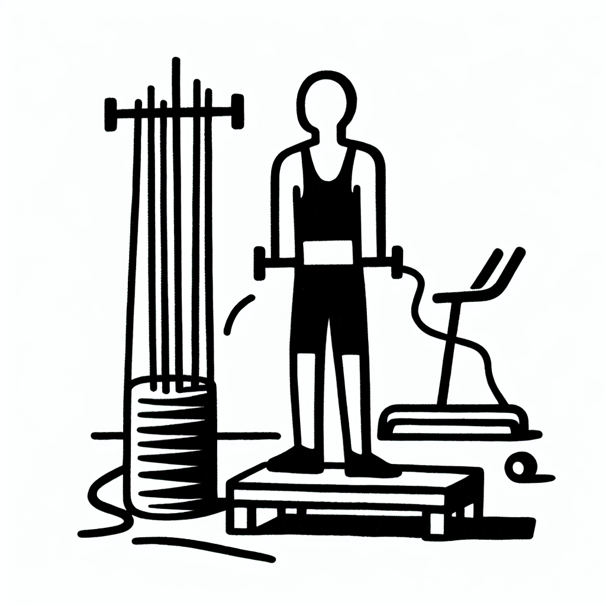

Renforcement du Core : pourquoi le Lagree est roi
Renforcement du Core : pourquoi le Lagree est roi
La quête d'un core solide et performant est au cœur de tous les entraînements modernes. Que vous soyez un surfeur aguerri défiant les vagues de la Côte Basque ou quelqu'un cherchant à améliorer sa posture au quotidien, un core renforcé est la clef de votre succès. A Anglet, DOZ fait figure de pionnier avec le Lagree, une méthode révolutionnaire qui change la donne dans le renforcement musculaire. Alors, pourquoi le Lagree est-il couronné roi ? Découvrons-le ensemble.
L'importance d'un core puissant
Avant de plonger dans le monde du Lagree, il est essentiel de comprendre pourquoi le core mérite notre attention. Constitué des muscles abdominaux, lombaires, obliques et du plancher pelvien, le core est votre centrale énergétique.
- Amélioration de la posture : Un core solide maintient la colonne vertébrale bien alignée, réduisant ainsi les maux de dos.
- Performance sportive accrue : Que ce soit en surf ou dans d'autres disciplines, un core puissant optimise la force, l'endurance et l'agilité.
- Soutien fonctionnel : Au-delà de l'esthétique, le core joue un rôle crucial dans les activités quotidiennes comme soulever, tourner, et même s'asseoir.
Aujourd'hui, des méthodes efficaces comme le Lagree prennent le dessus pour renforcer ces muscles vitaux avec des résultats impressionnants.
Lagree : l'innovation à la portée de tous
Le Lagree n'est pas une simple tendance mais une révolution dans l'univers du fitness. Cet entraînement à haute intensité, doux sur les articulations, booste votre core grâce à l'utilisation des machines MegaPro sophistiquées disponibles chez DOZ.
- Entraînement complet : Contrairement aux exercices traditionnels, le Lagree cible chaque groupe musculaire, garantissant un renforcement uniforme.
- Résultats rapides : Avec des séances de seulement 40 minutes, attendez-vous à des résultats visibles en peu de temps.
- Intensité sans impact : Idéal pour les novices comme les experts, le Lagree limite le stress sur vos articulations, permettant une pratique sécurisée et continue.
Chez DOZ, notre studio emblématique offre une ambiance qui inspire et motive, intégrant l'esthétique brute et moderne qui résume notre philosophie.
Support personnalisé et communauté soudée
À DOZ, chaque séance de Lagree n’est pas seulement un entraînement mais une expérience. Nos instructeurs qualifiés, passionnés par le bien-être, vous guident à chaque étape.
- Encadrement expert : Profitez de conseils personnalisés pour optimiser vos performances et adapter les mouvements à vos besoins.
- Esprit de communauté : Rejoignez une communauté dynamique partageant votre passion pour le sport et l'authenticité.
- Évolution continue : Chaque séance au studio DOZ est l'occasion de progresser et de repousser vos limites dans un environnement bienveillant.
Notre espace chaleureux et connecté offre également une pause réconfortante autour d'un café de spécialité ou d'une collation saine, parfaitement adaptées à votre mode de vie actif.
Associations gagnantes : Lagree et nutrition
Un core renforcé nécessite également une alimentation équilibrée pour soutenir votre esthétique et votre performance.
- Alimentation locale et de saison : Le coffee shop de DOZ propose une cuisine qui nourrit votre corps et votre esprit.
- Café de spécialité : Prenez une pause pour un moment de détente avec nos blends soigneusement torréfiés.
- Simultanéité corps-esprit : Nous croyons fermement à l'harmonie entre une pratique sportive intense et une nutrition de qualité pour des résultats optimaux.
Plongez dans notre philosophie 'Instant Brut', où l'authenticité et la simplicité sont alignées avec vos objectifs de vie sain et actif.
Conclusion : Embrasser le style de vie DOZ
En conclusion, lorsque l'objectif est de renforcer le core, le Lagree s'impose comme l'option incontournable. Offrant efficacité, sécurité et plaisir, cette méthode vous aide à atteindre vos objectifs sans compromis. Chez DOZ, offrez-vous une immersion totale dans une approche intégrée du bien-être et de la performance.
Prêts à transformer votre corps et à rejoindre notre communauté ? Réservez dès aujourd'hui votre séance chez DOZ et découvrez par vous-même pourquoi le Lagree est le roi du renforcement du core.